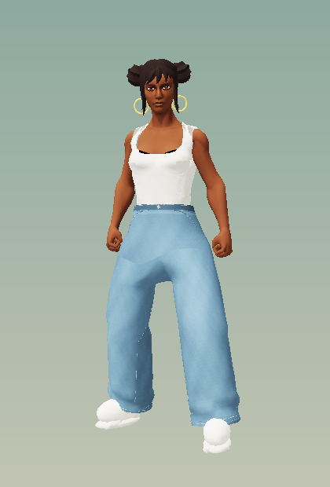
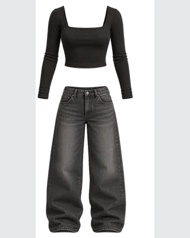
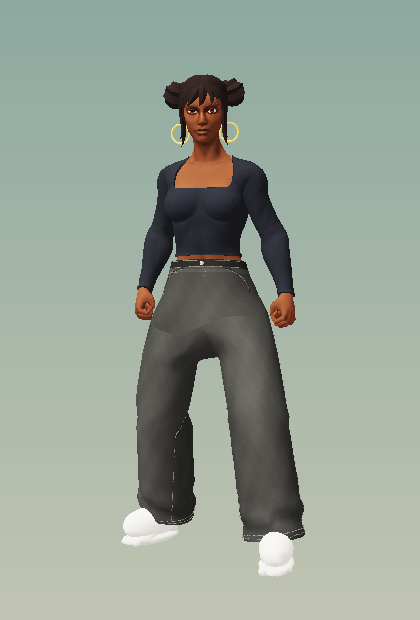
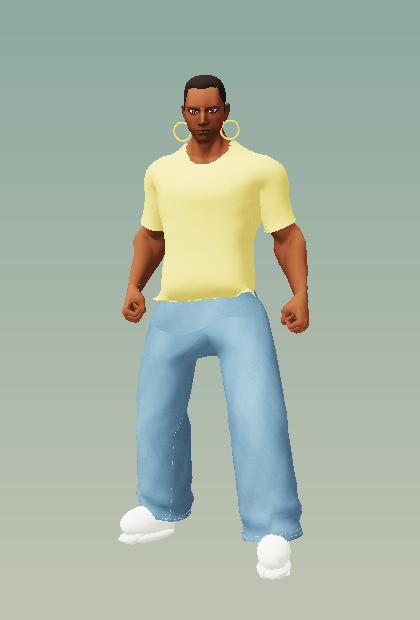
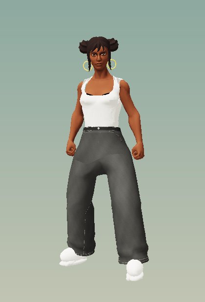

Ivory tank & light-blue wide jeans


outfit-f-tank-denim
The charcoal outfit's direction is approved. Clarity refinements and the added tank/tee outfits await your in-game screenshot review.
These are software geometry diagnostics, not game screenshots. Automated visual capture remains pending. Open the actual game outfit review or the live character and outfit study in your normal browser.


outfit-f-square-denim

outfit-f-tank-denim


outfit-m-relaxed-denim

Ivory tank with washed-black jeans. Tops and bottoms retain independent dyes; pocket details follow the bottom garment.
All individually indexed designs · Validation and remaining limits